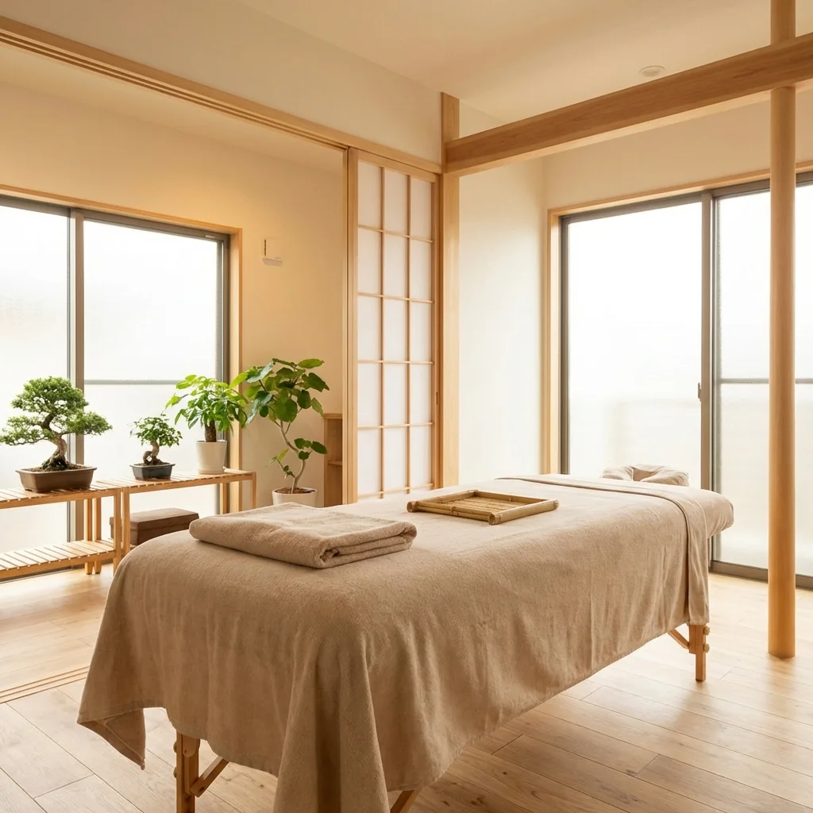
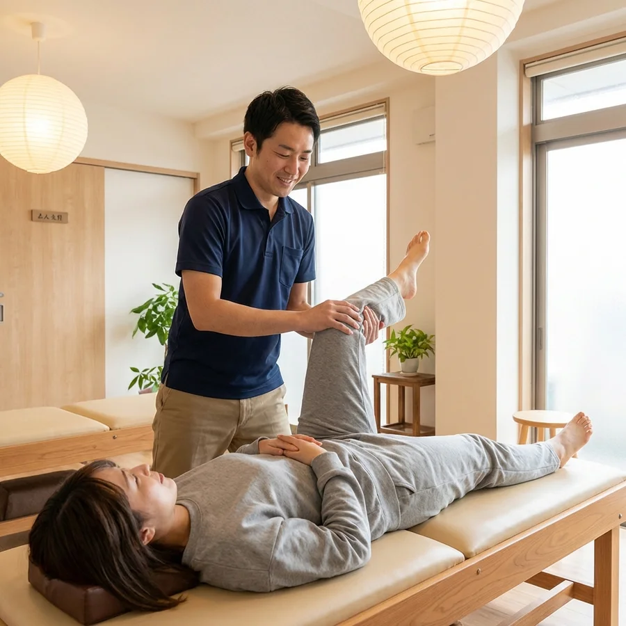
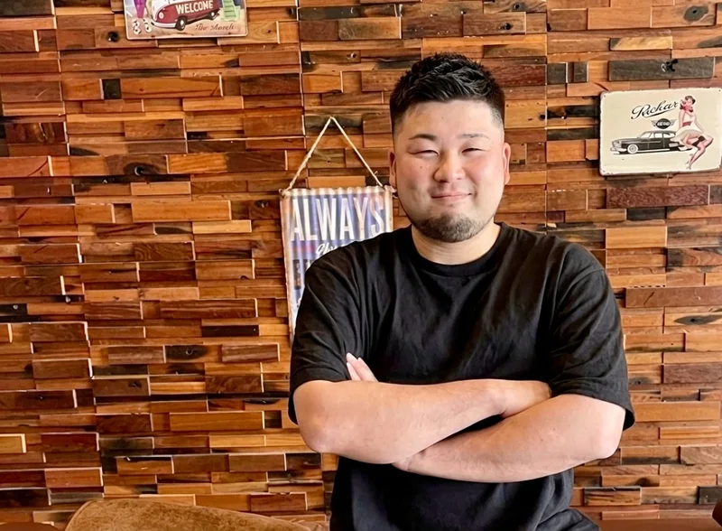

FIRST VISIT
初めての方へ初回体験コース
カウンセリングからセルフケアまで、
Resetsのコンディショニングを体験。
¥5,500税込
約60分カウンセリングを含みます
- 丁寧なカウンセリング・身体チェック
- 身体の状態に合わせた施術
- ご自宅でできるセルフケアアドバイス
CONDITIONING SALON · SAKURAGAWA
身体が変わると、日常が変わる。
施術とトレーニングを組み合わせて、
あなたらしく動ける身体づくりを。
初回体験 5,500円（税込） / 約60分

01一人ひとりに合わせたケア
02完全予約制のサロン
03夜22時まで営業
04無料駐車場あり
01 — OUR PHILOSOPHY
肩や腰の重さ。いつの間にか気になる姿勢。
好きな運動を、前のように楽しめないもどかしさ。
Resetsは、そんな日々の身体の悩みに寄り添う
コンディショニングサロンです。
大切にしているのは、施術で整えることと、
自分の身体を上手に動かすこと。
今の状態を一緒に確かめながら、あなたに合ったケアをご提案します。
FOR YOUR EVERYDAY

THE RESETS APPROACH
リラクゼーションとトレーニング。
ふたつの視点から、身体をサポートします。
お悩みや生活習慣を丁寧に伺い、姿勢や動きの癖を確認。一緒に身体の状態を整理します。
一人ひとりに合わせた施術とエクササイズ。運動に慣れていない方も、ご自身のペースで。
ご自宅でできるセルフケアや身体の使い方まで。日常に取り入れやすい方法をお伝えします。

03 — YOUR PARTNER
私自身、スポーツで身体を痛めた経験があります。
だからこそ、自分らしく動けることの大切さを感じています。
目指すのは、ご自身の身体を理解し、日常の中でも整えていけること。お一人おひとりと向き合いながら、その一歩をお手伝いします。
04 — FIRST EXPERIENCE
初回は約60分。
お話を伺うところから、ゆっくり始めます。
気になることや生活習慣、これからどうなりたいかをお聞かせください。
姿勢や動き、可動域をチェック。今の身体の状態を一緒に確認します。
状態に合わせて施術。必要に応じて、やさしいエクササイズを取り入れます。
ご自宅でできるセルフケアや、日常の身体の使い方をお伝えします。
QUESTIONS & ANSWERS
このほかのご質問も、
LINEでお気軽にどうぞ。
はい。身体の状態や運動経験に合わせて内容を調整します。激しいトレーニングを前提とせず、ご自身のペースで進めていきます。
カウンセリング・身体チェック・施術・セルフケアのご案内を含め、約60分です。初回体験は5,500円（税込）でご案内しています。
LINEで友だち追加後、ご希望の日時と「初回体験希望」とお送りください。お悩みやメニューについてのご相談も承ります。メッセージは24時間送信できます。返信をもって日時をご案内します。
無料駐車場をご用意しています。店舗は茨城県桜川市明日香2-5、国道50号沿い・カワチ薬局近くです。詳しい場所は下のアクセスをご覧ください。
05 — ACCESS
LET'S RESET.
まずは、今の身体のことを話してみませんか。
ご予約も、ご相談も。LINEでお気軽に。
スマートフォンのカメラで
QRコードを読み取ってください。